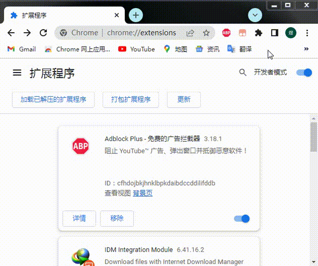

本方法可以解决国内无法直连Google服务的问题注：如Google翻译、邮箱、商店等
下载&安装插件
首先需要下载一个浏览器插件：谷歌助手。插件下载：https://wwwy.lanzouq.com/iiPr5163q8xi
安装步骤理（其他浏览器的操作也大差不差）
1、打开扩展程序
2、打开开发者模式并将后缀为.crx的文件拖入
安装之后
1、注册或登录（注册的步骤这里就不多赘述了）

完成以上步骤你便可以在不翻墙的前提下使用Google服务力!(∠·ω< )⌒★